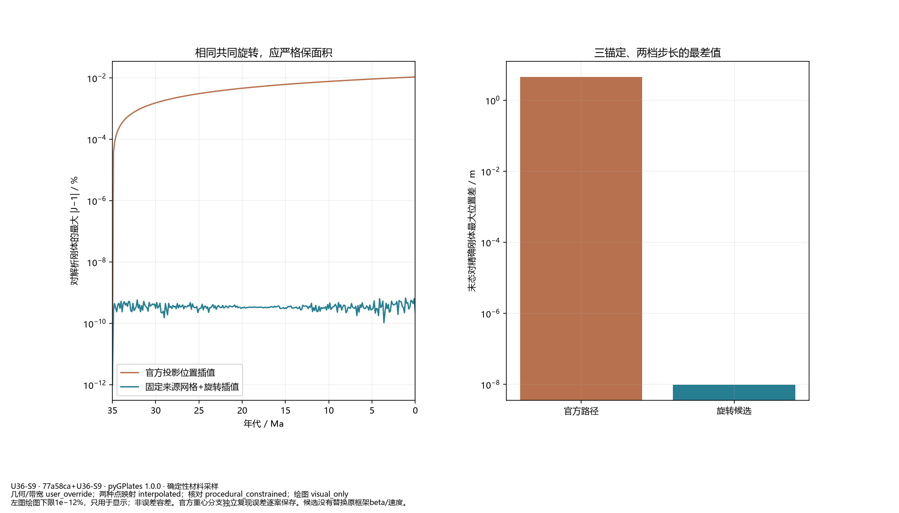
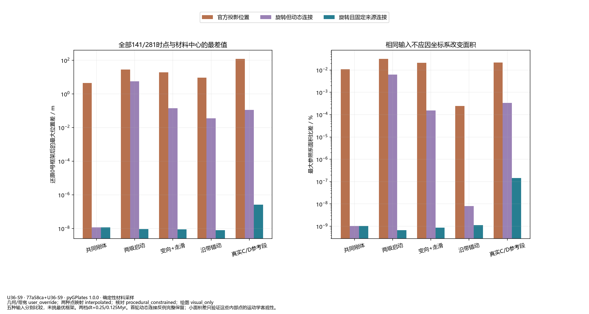
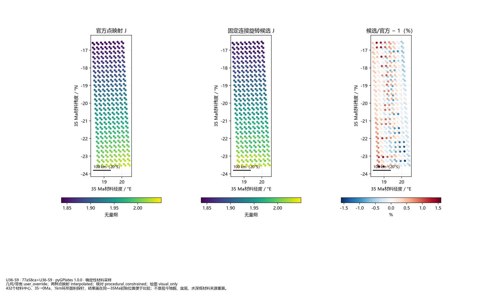
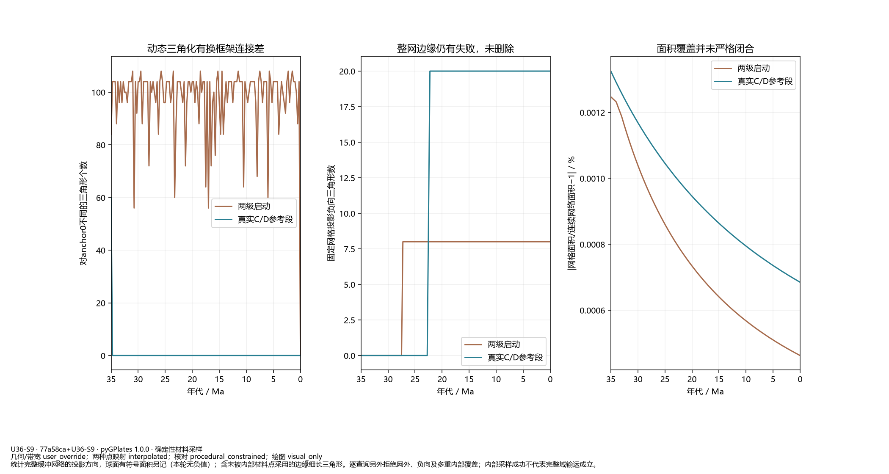

局部插值小试；不是新世界地貌或B5修复。默认C2，阶段1未通过。

左图绘图下限1e−12%，只用于显示；非误差容差。官方重心分支独立复现误差逐案保存。候选没有替换原框架beta/速度。

五种输入分别比较，未挑最优框架。两档dt=0.25/0.125Myr。首轮动态连接反例完整保留；小面积差只验证这些内部点的运动学客观性。

432个材料中心、35→0Ma、1km环形面积探针，结果画在同一35Ma初始位置便于比较；不是现今地貌、盆底、水深或材料来源重算。

统计完整缓冲网络的投影方向，球面有符号面积另记（本轮无负值）；含未被内部材料点采用的边缘细长三角形。逐查询另外拒绝网外、负向及多重内部覆盖；内部采样成功不代表完整域输运成立。